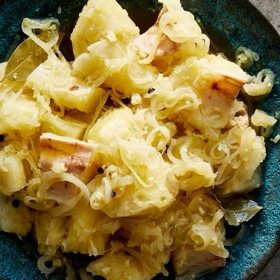

← All recipes
Yuca Con Mojo

Servings: 6 servings ·
Ingredients
- FOR THE YUCA:
- 2 pounds yuca (see Note)
- ¼ cup kosher salt
- FOR THE MOJO:
- 1 cup olive oil
- 1 large white onion, sliced into thin circles
- 5 large garlic cloves, minced
- 1 teaspoon whole black peppercorns
- 2 dried bay leaves
- ½ teaspoon kosher salt
- ¼ cup white vinegar
Directions
- Fill a large pot with water and bring to a boil over high heat.
- Prepare the yuca: Fill a large bowl with water. Peel the yuca with a sharp peeler or paring knife, then chop it into 2-inch pieces, tossing them in the bowl of water as you go to avoid discoloration.
- Make the mojo: Bring olive oil to a simmer in a deep skillet over medium heat. Add onion, garlic, peppercorns, bay leaves and ½ teaspoon salt, stirring well to incorporate. Cook until the onions are translucent and soft, stirring often and being careful not to let the onions brown, about 5 to 7 minutes. Remove from heat and add vinegar, and add salt to taste.
- Once water is at a rolling boil, add ¼ cup salt, then carefully add yuca. Boil for 20 to 30 minutes, until a sharp knife goes through easily, careful not to let yuca overcook and become mushy.
- Drain yuca and transfer to a serving dish. Pour over warm mojo and serve.
Original source: cooking.nytimes.com